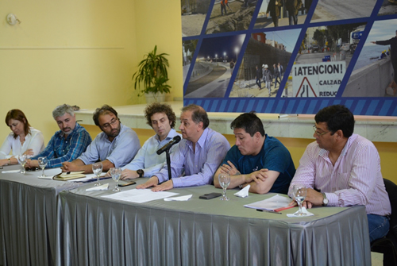
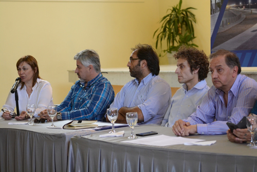
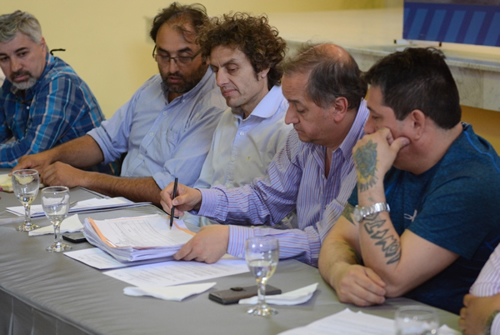

Real Chubut - Agencia de Noticias


Linares: “Esta es una respuesta histórica para seguir trabajando en políticas de prevención de la violencia de género”

Así lo aseguró el intendente municipal, Carlos Linares, tras ejecutar la apertura de dos licitaciones públicas para la construcción de nuevas obras para la ciudad. La primera, corresponde a la edificación de la Sede La Casa, área municipal que aborda temáticas vinculadas con la violencia de género y la segunda, consiste en la construcción de un nuevo edificio municipal en respuesta a sucesivos pedidos de los gremios municipales para mejorar la atención al público.
Este mediodía, en las instalaciones del Ceptur, se puso en marcha el trámite administrativo por el cual se dio a conocer públicamente las ofertas para la construcción de dos obras históricas para la ciudad. La primera licitación que se realizó fue la para construcción de la Sede la Casa, donde se presentó únicamente Golfo San Jorge S.A. con una oferta de $11.972.324,12; y posteriormente, se realizó la licitación para la construcción de un nuevo edificio municipal, donde se presentó la firma Transredes S.A. con una oferta de $16.972.600,60.
Del acto participaron el secretario General y de Relaciones Comunitarias, Leonardo Rocha; el subsecretario de Obras Públicas, Luis Romero; la subsecretaria de Niñez, Adolescencia y Familia, Celia Gandini; el secretario gremial de la Asociación del Personal Jerárquico Municipal (APJ), Roberto Astete; el referente de la comisión directiva del Sindicato de Obreros y Empleados Municipales (SOEM), Jorge Peñaloza; las concejales, Norma Contreras y Sirley García y empleados municipales.
Al respecto, el intendente puso en valor el trabajo que se está llevando adelante por parte de todo el plantel profesional a cargo del secretario de Desarrollo Humano y Familia, Marcelo Rey, en cuanto a la atención y contención de mujeres víctimas de violencia de género y aseguró que “contamos con un equipo de técnicos que conocen muy bien el trabajo y diariamente atienden familias que atraviesan estas difíciles situaciones”.
“Celebro el trabajo que están haciendo desde la secretaria de Desarrollo Humano y Familia; celebro el trabajo de los concejales que también lucharon para que esta sede se haga y celebro el acompañamiento constante de los empleados municipales para dar respuestas a nuestra ciudad. Así que el desafío es seguir modernizándonos y profesionalizar cada vez más el trabajo que le damos a nuestra gente”, aseguró el jefe comunal.

“Todo esto es posible porque tenemos una gestión prolija”
Por su parte, el titular de la Subsecretaría de Obras Públicas, Luis Romero, afirmó que “si bien nadie escapa a la situación económica compleja que afecta al país, llegamos a la licitación número 89 este año. En este caso, son construcciones que se llevarán adelante con fondos provenientes de la recaudación, con el aporte de los vecinos. Todo esto es posible porque tenemos una gestión prolija y estamos orgullosos por ello”.
Asimismo, Romero resaltó que “se trata de edificios para empleados municipales, se ha trabajado mucho para avanzar con estos proyectos, que mejorarán las condiciones de trabajo y la atención a los contribuyentes”.
En tanto, la subsecretaria de Niñez, Adolescencia y Familia, Celia Gandini, explicó que “la violencia contra la mujer es una cuestión cultural que se vive hace muchos años, y no estamos ajenos a esta situación. No tenemos todas las respuestas hoy, porque hay mucha violencia en la ciudad y el no tener un refugio fue perjudicando mucho la tarea porque en ocasiones se vencían los contratos y no es sencillo conseguir espacios para alojar mujeres con niños”.
Finalmente, Gandini detalló que “actualmente estamos atendiendo a 100 mujeres a quienes acompañamos en lo cotidiano para que puedan salir adelante. Mientras que en el refugio, tenemos alojadas un promedio de cinco mujeres permanentemente con sus niños. Por eso, este tipo de obras es fundamental”.
UOCRA puso en valor el ambicioso plan de obra municipal
El secretario general de la UOCRA, Raúl Silva, manifestó que “desde nuestra entidad gremial estamos muy contentos porque esta licitación que lleva adelante la Municipalidad de Comodoro Rivadavia es mano de obra directa para nuestro sindicato, para nuestros trabajadores”, al tiempo que agregó que “días atrás se realizaron varias aperturas de sobres y en esta época difícil, con este panorama, a través del Municipio estamos logrando subsanar la desocupación existente de los afiliados”.

En este sentido, agradeció al intendente Carlos Linares y a la gestión por llevar adelante un plan de obra tan significativo y ambicioso y al empresariado local por respetar y cumplir el Convenio Colectivo de Trabajo del sindicato.
“El impulso y la ejecución de estas obras no solo beneficia a la comunidad comodorense, sino que genera estabilidad laboral para los trabajadores, por lo tanto, vamos a continuar trabajando para que las bajas no sean tan complicadas”, concluyó Silva.
PUBLICIDAD